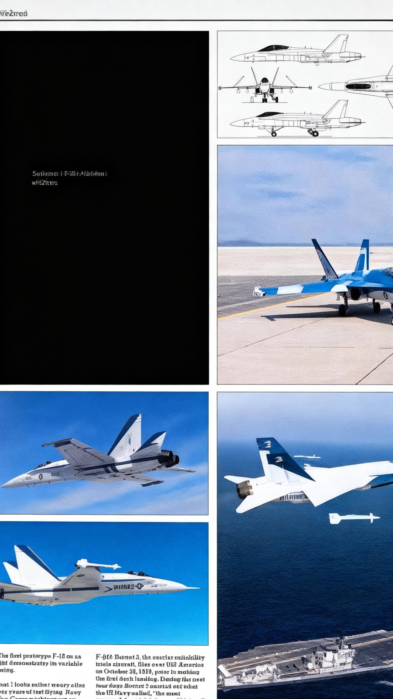

01. INTRODUÇÃO E ARQUITETURA
Visão geral do caça multimissão McDonnell Douglas F/A-18 Hornet, destacando sua versatilidade operacional em plataformas de porta-aviões.
Visão geral do caça multimissão McDonnell Douglas F/A-18 Hornet, destacando sua versatilidade operacional em plataformas de porta-aviões.

Detalhes técnicos sobre os motores General Electric F404-GE-400 e os sistemas de controle digital FADEC de primeira geração.

Integração de mostradores CRT multifuncionais (DDI) que reduziram substancialmente a carga de trabalho do piloto na gestão de combate em tempo real.